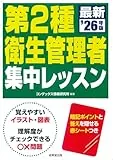
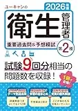

第二種衛生管理者の初学者向け教材セット3選【テキスト・要点・演習2026】
第二種衛生管理者試験をこれから始める方は、テキスト1冊で全体像を掴み、要点整理と演習を段階的に追加する方法が扱いやすいです。本記事では2026年度版の教材3冊を、初学者の学習フェーズ別に比較します。
この記事の要点
初学者が第二種衛生管理者の学習を始めるとき、テキスト・要点・演習の3冊をどう組み合わせるか知りたい。
- 「2026年度版 スッキリわかる 第2種衛生管理者 テキスト&問題集」
- 「第2種衛生管理者 集中レッスン '26年版」
- 「2026年版 ユーキャンの第2種衛生管理者 重要過去問&予想模試」
- 初学者の教材の役割
- 演習追加のタイミング
この記事の信頼性について
| 執筆 | 二衛マスター編集部（資格学習サイトの編集チーム） |
|---|---|
| 確認 | 公式情報確認担当（公開前に一次情報との照合を行う担当者） |
| 事実確認日 | 2026-06-03 |
| 主な参照元 |
1初学者向け教材の位置づけ
第二種は3分野を横断するため、最初の2〜4週間はテキスト1冊で全体像を掴むのが基本です。集中レッスンは要点の確認用、過去問&予想模試はテキスト読了後の演習用として位置づけます。いずれも本試験対策のメイン教材1冊の代わりにはなりません。
安全衛生技術試験協会（公式）の出題範囲と照合し、二衛マスターの過去問・用語解説と組み合わせて復習サイクルを回してください。
初学者向け教材3選（比較）
価格は執筆時点（2026-06-03）のAmazon税込参考です。購入前に必ず販売ページでご確認ください。
| 順位 | 商品名 | 価格（税込参考） | ページ数 | 向いている人 |
|---|---|---|---|---|
| 1 | 2026年度版 スッキリわかる 第2種衛生管理者 テキスト&問題集 | ¥1,650 | 448 | 最初の1冊で3分野の全体像をつかみたい初学者 |
| 2 | 第2種衛生管理者 集中レッスン '26年版 | ¥1,540 | 208 | 要点整理から演習へ移りたい人 |
| 3 | 2026年版 ユーキャンの第2種衛生管理者 重要過去問&予想模試 | ¥1,760 | 288 | テキスト読了後に演習量を確保したい人 |
2026年度版 スッキリわかる 第2種衛生管理者 テキスト&問題集
- 図解中心で労働生理・労働衛生・関係法令の輪郭を把握しやすい
- 章末演習で理解→確認のサイクルが回しやすい
- 本格的な問題集追加前のメインテキストに向く

第2種衛生管理者 集中レッスン '26年版
- レッスン形式で論点を短時間復習
- 成美堂の問題集・攻略本へのステップアップがしやすい
- 仕事終わりの30分学習と相性がよい

2026年版 ユーキャンの第2種衛生管理者 重要過去問&予想模試
- 重要過去問で本試験形式に慣れやすい
- 予想模試で直前の総仕上げができる
- テキスト1冊＋問題集1冊の2冊構成に組み込みやすい
23冊の選び方（フェーズ別）
最初の1冊は「2026年度版 スッキリわかる 第2種衛生管理者 テキスト&問題集」、通勤時間の要点確認には「第2種衛生管理者 集中レッスン '26年版」、演習フェーズでは「2026年版 ユーキャンの第2種衛生管理者 重要過去問&予想模試」が向きます。
安全衛生技術試験協会（公式）の出題範囲と照合し、二衛マスターの過去問・用語解説と組み合わせて復習サイクルを回してください。
31位：スッキリわかる（メインテキスト）
「2026年度版 スッキリわかる 第2種衛生管理者 テキスト&問題集」（TAC出版・1,650円税込参考）は、図解中心で3分野の輪郭を把握するのに向いています。章末演習で理解→確認のサイクルが回しやすく、初学者の最初の1冊として選ばれやすい定番です。
安全衛生技術試験協会（公式）の出題範囲と照合し、二衛マスターの過去問・用語解説と組み合わせて復習サイクルを回してください。
42位・3位：集中レッスン・ユーキャン過去問
「第2種衛生管理者 集中レッスン '26年版」（成美堂出版・1,540円税込参考）はレッスン形式で論点を短時間復習。テキスト該当章を読んだあとの確認や、直前の総復習に使えます。
「2026年版 ユーキャンの第2種衛生管理者 重要過去問&予想模試」（1,760円税込参考）。
- テキスト1冊目を終えたあと
- 演習量を確保する第2冊として向いてい
安全衛生技術試験協会（公式）の出題範囲と照合し、二衛マスターの過去問・用語解説と組み合わせて復習サイクルを回してください。
5テキスト本冊への移行と演習追加
- スッキリわかるで3分野を一通り読み
- 章末演習で理解度を確認できたら（目安2〜4週間）
- ユーキャン過去問&予想模試で本試験形式の演習に移り
並行して二衛マスターの無料過去問で弱点を洗い出すと効率的です。
安全衛生技術試験協会（公式）の出題範囲と照合し、二衛マスターの過去問・用語解説と組み合わせて復習サイクルを回してください。
安全衛生技術試験協会（公式）の出題範囲と照合し、二衛マスターの過去問・用語解説と組み合わせて復習サイクルを回してください。
6初学者の2〜3冊構成例
例：スッキリわかる（2週）→ユーキャン過去問（3週）→二衛マスター過去問（継続）。集中レッスンは通勤時間の隙間学習用として挟む使い方も有効です。教材は増やしすぎず、1フェーズ1冊を原則にすると計画が立てやすくなります。
安全衛生技術試験協会（公式）の出題範囲と照合し、二衛マスターの過去問・用語解説と組み合わせて復習サイクルを回してください。
安全衛生技術試験協会（公式）の出題範囲と照合し、二衛マスターの過去問・用語解説と組み合わせて復習サイクルを回してください。
7よくある質問
3冊すべて最初に買う必要がありますか？
集中レッスンだけで受験できますか？
どのくらいで演習用の問題集に移ればよいですか？
記事の基本情報
| ジャンル | 学習計画 |
|---|---|
| タグ | 独学 / 参考書 |
公式情報の確認
公式情報の確認：第二種衛生管理者試験の最新情報は、安全衛生技術試験協会（公式）などの公式情報を必ず確認してください。本人に割り当てられた試験会場は受験票の表記が正本です。